Custom Craftingrezepte
Withered Core
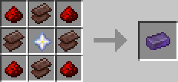
Truly Infinite Bow
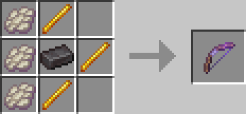
Fast & Fascinating Fork
Das Rezept ist shapeless.
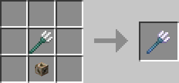
Infrangible Elytra
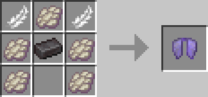
Gentle Tools
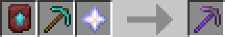
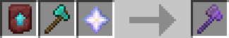
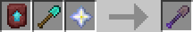
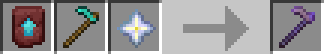
Health Tonic
Das Rezept ist shapeless.
Die Wasserflaschen sind Awkward Potions.
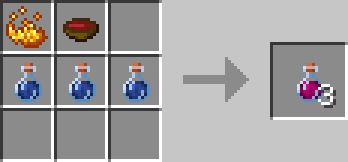
Stoneskin Tonic
Das Rezept ist shapeless.
Die Wasserflaschen sind Awkward Potions.
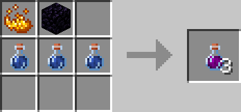
Tonic of the Water
Das Rezept ist shapeless.
Die Wasserflaschen sind Awkward Potions.
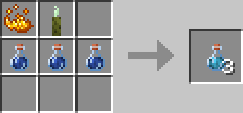
Tonic of true Strength
Das Rezept ist shapeless.
Die Wasserflaschen sind Awkward Potions.
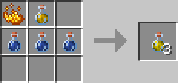
Lava-Proof Stew
Das Rezept ist shapeless.
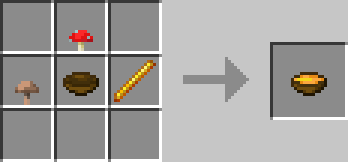
Lucky Stew
Das Rezept ist shapeless.
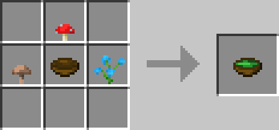
Stew of Regeneration
Das Rezept ist shapeless.
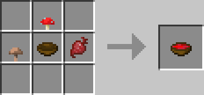
Netherrack
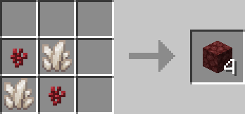
Soul Sand
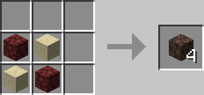
Soul Soil
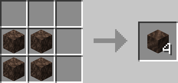